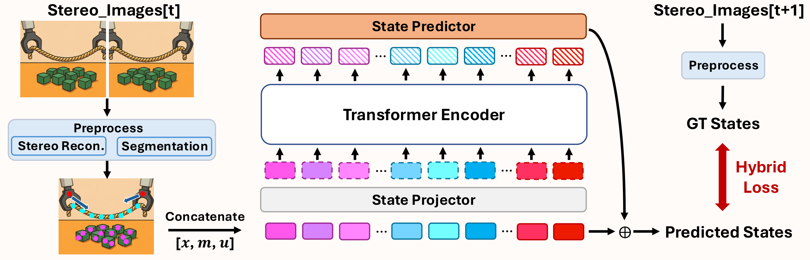
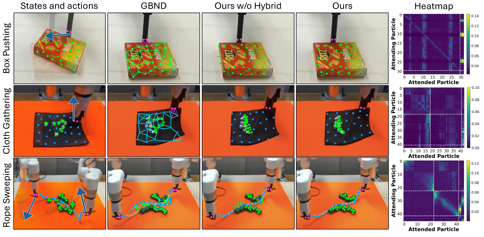
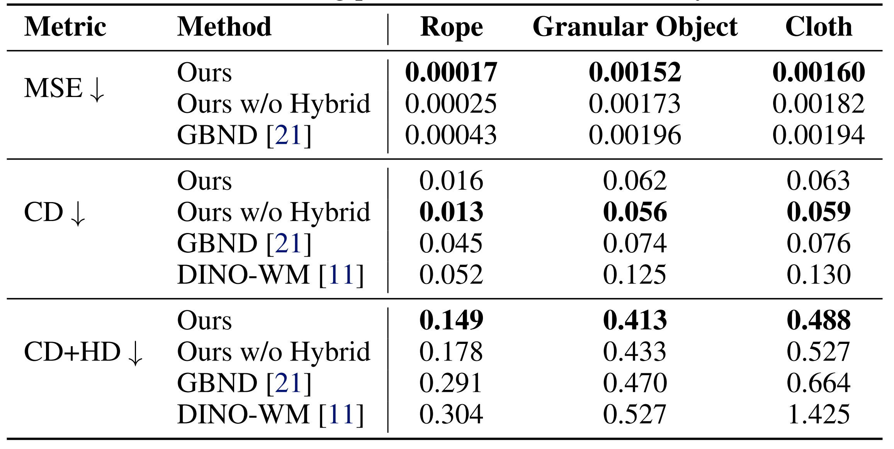
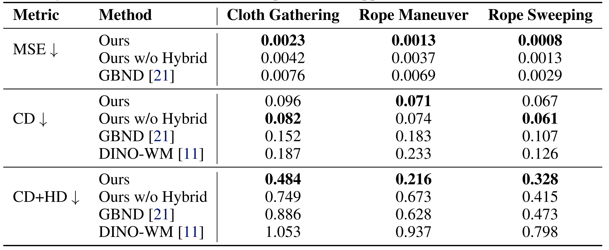
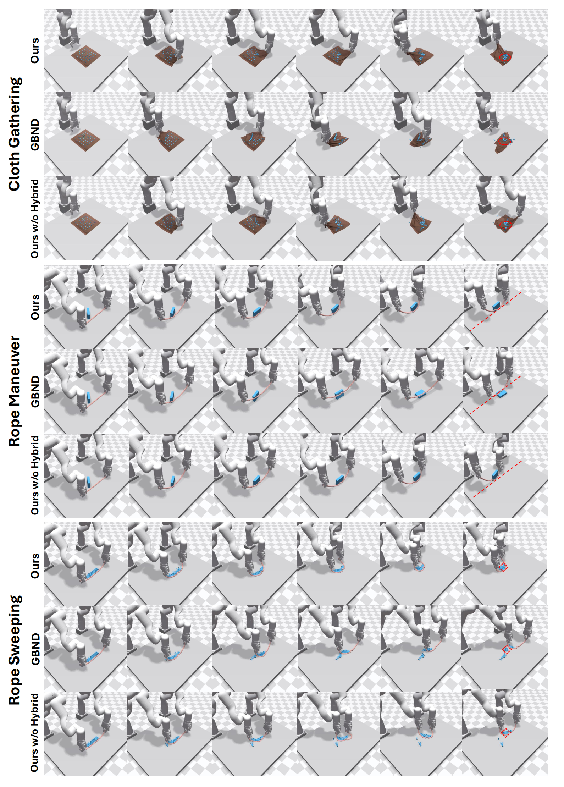

ParticleFormer: A 3D Point Cloud World Model for Multi-Object, Multi-Material Robotic Manipulation
CoRL 2025
Highlights
We present experiment videos that demonstrate the effectiveness of our Transformer-based dynamics learning backbone and hybrid 3D point cloud supervision, along with rollout results from real-world robotic manipulation tasks.
Abstract
3D world models (i.e., learning-based 3D dynamics models) offer a promising approach to generalizable robotic manipulation by capturing the underlying physics of environment evolution conditioned on robot actions. However, existing 3D world models are primarily limited to single-material dynamics using a particle-based Graph Neural Network model, and often require time-consuming 3D scene reconstruction to obtain 3D particle tracks for training. In this work, we present ParticleFormer, a Transformer-based point cloud world model trained with a hybrid point cloud reconstruction loss, supervising both global and local dynamics features in multi-material, multi-object robot interactions. ParticleFormer captures fine-grained multi-object interactions between rigid, deformable, and flexible materials, trained directly from real-world robot perception data without an elaborate scene reconstruction. We demonstrate the model's effectiveness both in 3D scene forecasting tasks, and in downstream manipulation tasks using a Model Predictive Control (MPC) policy. In addition, we extend existing dynamics learning benchmarks to include diverse multi-material, multi-object interaction scenarios. We validate our method on six simulation and three real-world experiments, where it consistently outperforms leading baselines by achieving superior dynamics prediction accuracy and less rollout error in downstream visuomotor tasks.
Method

Modeling dynamics in multi-object, multi-material scenarios is challenging due to complex and heterogeneous interactions. In this paper, we propose ParticleFormer, a Transformer-based point cloud world model trained with hybrid supervision, enabling accurate prediction and model-based control in robotic manipulation tasks. Our method firstly reconstructs particle-level states from stereo image inputs via stereo matching and segmentation. Then the Transformer encoder models interaction-aware dynamics over particle features concatenating position, material, and motion cues. Finally, the model is trained using a hybrid loss computed against future ground-truth states extracted from the next stereo frames.
Results
Dynamics Modeling: ParticleFormer can generate visually plausible and physically coherent dynamics, especially in complex multi-material interactions.- Qualitative Results:

- Quantitative Results:
 
Model-Based Control: ParticleFormer can enhance visuomotor control performance in downstream manipulation tasks.- Simulation Results:

- Real-World Results: